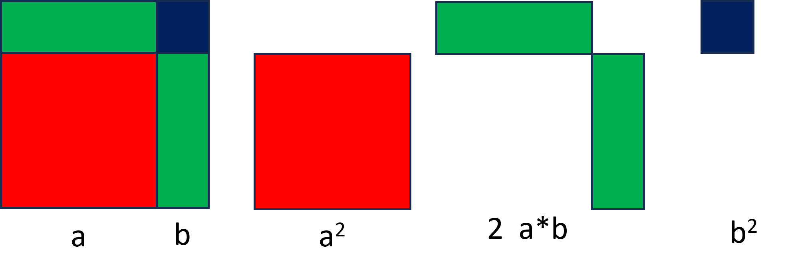
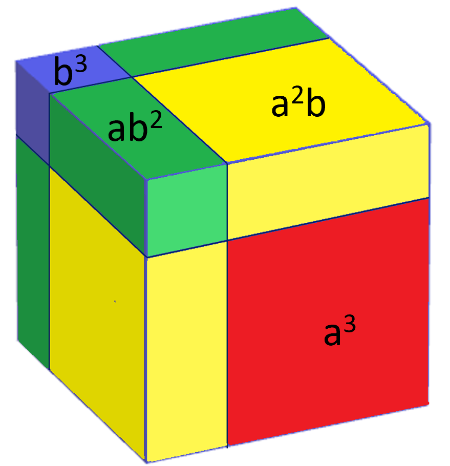

For a right angled triangle whose shorter sides are of length a and b, and whose longer side (hypotenuse) is of length c, Pythagoras' theorem states a2 + b2 = c2.
My Pythagoras page demonstrates how Bronowski believed Pythagoras demonstrated his theorem - moving triangles - not needing algebra.
This page demonstrates the usual representation, but with triangles moved to demonstrate the theorem without algebra.
It fits with the geometric interpretation of the Binomial Theorem, showing (a+b)2 = a2 + 2ab + b2.
In the first figure, four right angled triangles are drawn in an area size a+b, surrounding a square of area c2.
In the second construct, two of the triangles are moved, forming rectangles and two squares of area a2 and b2.
The areas of gray must be the same, so c2 = a2 + b2.
Pythagorean triples are sets of three integers a, b and c which fulfill the theorem. The page draws the constructs with some of these triples.
Use the 'explain' buttons to find out more.
Graphical interpretations of the Binomial theorem : A square of size a+b can be drawn as a square of size a, one of size b, and two rectangles one size a*b and one b*a. A cube of size a+b can be drawn as cubes of size a and b, and three cuboids of size a2b and of ab2.
 and 
WS Gilbert's Major General sang, "About Binomial theorem I am teeming with a lot of news, with many useful facts about the square on the hypotenuse!" It is rather appropriate that a combination of these can be used together.
Triple is : 3² + 4² = 5²